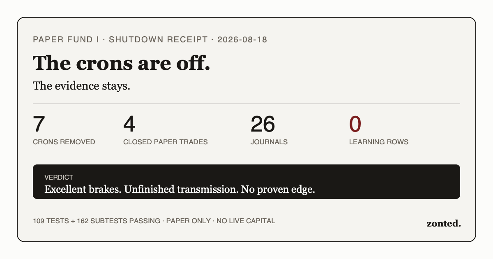

I Shut Down My Autonomous Trading Crons. Here’s What I Learned.
I removed every scheduler job that directly ran, monitored, reviewed, or published my Alpaca paper-trading apprentice. Seven crons are gone. The code and evidence remain. That distinction matters: I am retiring automation, not deleting history until it becomes flattering.
The experiment proved that an autonomous agent can be fenced away from live money and forced to preserve ugly evidence. It did not prove a trading edge.
- Seven autonomous-trading crons removed. Morning and afternoon decisions, the five-minute stop/target monitor, EOD reporting, EOD learning review, the strategy lab, and the public journal publisher are no longer scheduled.
- Paper only, always. Four closed paper trades lived in SQLite. No live-capital route existed in this system.
- The evidence pipe failed. The system created 26 immutable journals and 64 current prediction records, but the authoritative observation table still contained zero rows.
- The best feature was refusal. Fifteen of 18 decision journals ended
NO_TRADE; dead triggers stayed dead, malformed evidence stayed unavailable, and model prose never gained order authority. - Next time: one deterministic state machine first, agents second. A smaller pipeline must prove treatment/control persistence, causal resolution, and reporting before it gets a scanner, reviewer, publisher, or broker ceremony.
The short version: excellent brakes, unfinished transmission. Not investment advice. No strategy here earned promotion.

What I shut down
On August 18, 2026, I removed the seven Hermes scheduler entries that directly belonged to the autonomous Alpaca paper-trading loop. A scheduler read-back showed 16 jobs before removal and nine afterward. A process scan found no surviving paper_trader.py, alpaca_paper, or apprentice process.
| Retired job | Former cadence | Job |
|---|---|---|
| Morning decision | 08:50 CT weekdays | Research, journal review, optional paper proposal |
| Afternoon decision | 14:15 CT weekdays | Second opportunity scan and decision |
| Stop/target monitor | Every 5 minutes, 08:00–15:55 CT | Deterministic reconciliation and exits |
| EOD report | 15:10 CT weekdays | Broker/ledger report |
| EOD learning review | 15:25 CT weekdays | Resolve predictions, diagnose failures, obtain Fable review |
| Strategy lab | 16:30 CT weekdays | Fable/Grok adversarial strategy R&D |
| Public journal publisher | 17:00 CT weekdays | Privacy-reduce, dual-review, commit, deploy |
I did not remove Zonted’s unrelated market-dashboard publishers, Robinhood thesis-list sync, model market-risk assessment, or held-symbol monitor. Those systems do not make autonomous Alpaca decisions or submit apprentice orders. Calling every trading-adjacent cron “the trader” would make this teardown neat and wrong.
The two deterministic wrapper scripts—alpaca_paper_monitor.py and alpaca_paper_eod.py—remain on disk as historical implementation artifacts. Cron outputs, journals, review receipts, SQLite, and source code also remain. There is simply no scheduler left to run them.
The honest scorecard
Durable closed-trade evidence starts with a position opened August 4; the scheduled journal window ran from August 6 through the August 18 morning cycle. The current journal directories contain 26 persisted entries: 18 decisions and eight EOD reviews. Of those 18 decisions, three said TRADE and 15 said NO_TRADE. The durable database contains four closed paper trades—PLTR, KO, XLRE, and DIS—and 16 execution events.
| Receipt | Result | Meaning |
|---|---|---|
| Autonomous crons | 7 removed | No remaining autonomous Alpaca schedule |
| Decision journals | 18 | 3 TRADE · 15 NO_TRADE |
| EOD reviews | 8 | Immutable, Fable-reviewed learning records |
| Closed paper trades | 4 | All flat by shutdown; no open position |
| Current prediction records | 64 | Useful prose-level hypotheses, not equivalent to ledger evidence |
| Authoritative learning observations | 0 | The fatal integration result |
| Rule changes / reviewer state | 0 / 0 | No deterministic learning loop completed |
| Verification suite | 109 + 162 | 109 tests and 162 subtests passed at shutdown |
Performance needs two measurement epochs because the virtual sizing basis changed. The earlier epoch finished in the +1% to +2% band; the later paper epoch finished between 0% and -0.1%. I will not pool those bands into a synthetic “overall return.” R-multiple evidence was designed to remain continuous, but the learning ledger that would make that series authoritative stayed empty.
The system produced more governance artifacts than market evidence. That is not a punchline; it is the root cause.
What worked
- Paper/live separation held. The Alpaca client rejected any non-paper endpoint. Research observations could not satisfy the hash-bound Tier 2 proposal ceremony. Models could criticize; deterministic Python owned broker calls.
- Abstention was real. There was no trade quota. Fifteen of 18 decisions chose cash. Failed-before-trigger setups received no invented fill, return, or “avoided loss” credit.
- Risk gates stayed code-owned. Position count, duplicate-underlying checks, loss stops, minimum 2:1 entry geometry, liquidity, option constraints, sizing, and proposal hashes could not be loosened by reviewer prose.
- Point-in-time thinking improved. Inputs carried provider and cutoff provenance. Same-bar ambiguity was treated adversely. The system caught a pre-registration MFE contamination and withdrew the flattering number.
- Review boundaries were unusually honest. Claude Fable 5 reviewed journal drafts through a signed receipt. Strategy R&D split Fable’s evidence-only room from Grok’s quarantined self-diagnosis room. Publication PASS never meant strategy PASS.
- Privacy reduction improved. Later entries used coarse percentage bands, and the structured public schema rejected quantities, raw execution prices, order/account identifiers, dollar P&L, balances, and reconstructible sizing. Seven dual-reviewed public entries passed a publication-safety gate—but that gate was not evidence of edge.
- The test surface was strong. At shutdown, the private repo’s suite returned
109 passed, 162 subtests passedin 0.33 seconds.
What failed
The observation writer was never wired into the final-journal path. Dry-run parsing could see scoreable predictions, but persistence inserted nothing. On the final EOD receipt, 63 predictions existed, 25 were scorable, and the SQLite tables observations, observation_events, rule_changes, and review_state all remained empty. The generated family report stayed families=[].
That single defect poisoned everything above it:
- Matched controls existed as a design and test contract, not a production evidence stream.
- Strategy families could not earn
PROMOTE,RETIRE,CONTINUE, orREDESIGN_HORIZONfrom forward evidence. - Fable and Grok kept reviewing mostly the same diagnosis: fix the writer, stop renaming reclaim ideas, and do not confuse unresolved shadows with expectancy.
- The public journal became a beautifully audited record of why the learning system had not learned.
Six other defects mattered:
- Mechanism monoculture. Day-two continuation, oversold reclaim, and several “different” lanes collapsed into one level/VWAP mechanism. Labels diversified faster than behavior.
- Execution-feed weakness. Alpaca IEX was single-venue, not SIP/NBBO. DIS exposed a dislocated quote/stop path; XLRE exposed noise-scale stop and missing exit-spread telemetry.
- Option capability never became trustworthy. Contract pagination and quote-snapshot joins returned data separately but failed to join valid symbols. The correct count stayed unavailable, not zero.
- Schema and policy drift. An owner-intended three-close sizing gate conflicted with the executable 20-close/+0.30R contract. The stricter code correctly won fail-closed, but the mismatch should have blocked rollout before scheduling.
- Too many agents before one end-to-end canary. Morning, afternoon, EOD, strategy, publication, and reviewer layers all ran while the core treatment→control→SQLite→report loop had never passed once in production.
- The privacy contract improved without migrating history. At shutdown, the current public-safety guard passed five of six private public drafts; the older August 7 draft failed today’s stricter rules. Later entries used coarse percentage bands, but an append-only archive is not automatically compliant with a newer schema.
How I would rebuild it
- Start with one boring canary. Register a guaranteed-fire SPY/QQQ measurement pair, freeze treatment and control in one transaction, resolve it causally, persist it, and require a fresh report. No scanners or orders until this works across two completed sessions.
- Use one deterministic state machine. One scheduler job should advance explicit states—
COLLECTED,REGISTERED,RESOLVED,PERSISTED,REVIEW_DUE,PUBLISHED. Agents can supply bounded artifacts; they should not be the orchestration bus. - Make zero inserts a release failure. If eligible inputs exist and the writer inserts zero rows, stop the pipeline immediately. Do not let review or publication turn plumbing failure into 10,000 more words.
- Separate four stores. Broker execution, research observations, model reviews, and public exports need separate schemas and ownership. Publication must consume a reduced artifact; it must never be the only place where a prediction becomes visible.
- Prove feed fidelity before strategy breadth. Freeze quote-age, spread, venue, pagination, join, and exit-telemetry tests. A second strategy family is worthless when the first fill path is ambiguous.
- Keep models event-driven. Review only after a finite evidence delta—say ten new terminal observations—not on a daily clock. Most scheduled reviews repeated the same empty-ledger verdict.
- Version policy as one migration. Config, code, docs, scheduler prompts, tests, and public copy must agree before a risk or unlock contract becomes active.
- Publish less, later. The public journal should trail validated evidence. A website deploy is not part of the learning critical path.
- Continuously revalidate historical exports. Run the current public-safety guard across every dated draft in CI, then migrate or quarantine anything that fails. Reviewer PASS at publication time is not a lifetime privacy warranty.
My strongest opinion: the next version should be smaller by an order of magnitude. One family, one control, one resolver, one writer, one report. Earn complexity with completed rows.
The full process
- Morning decision: read the learning playbook; inspect broker state, regime, catalysts, standard and aggressive lanes; write a structured draft with at least five lanes, two candidates, a decision, and falsifiable predictions.
- Journal review: run Claude Fable 5 through the claude.ai OAuth CLI; bind the critique to the draft hash; revise only allowed fields; persist the signed final journal.
- Optional paper order: only a persisted
TRADEdecision with an exact selected proposal hash could reachpaper_trader.py open; deterministic risk code recomputed every gate. - Five-minute monitor: reconcile fills and positions, enforce frozen stops/targets, and emit open/close receipts.
- Afternoon decision: repeat research with updated completed bars; dead morning triggers could not be revived from hindsight.
- EOD report: reconcile Alpaca paper state with SQLite, report realized/marked state and open risk, resolve predictions mechanically, and preserve provider limitations.
- EOD learning review: draft what worked, failed, and changed; obtain another signed Fable critique; persist the immutable review and rebuild
TRADE_JOURNAL.md. - Strategy lab: send split evidence bundles to Fable and Grok; validate their JSON; preserve disagreements; keep new ideas shadow-only.
- Public publication: reduce the private entry to
trading/autonomous.json, reject sensitive fields, require exact-entry Fable and Grok PASS receipts, render the route, run Zonted tests, and deploy through GitHub Actions to Cloudflare Pages.
Every system and file
Systems: Hermes Agent cron scheduling; Alpaca paper brokerage and IEX market data; Robinhood read-only research data; local SQLite; deterministic Python risk/execution; Claude Fable 5 via claude.ai OAuth; Grok 4.5 via xAI OAuth; Slack receipts; Git/GitHub Actions; Zonted static HTML/JSON; Cloudflare Pages. Credentials lived in a private environment file and are intentionally not part of this inventory.
Runtime-generated private artifacts at shutdown: journal/ 26 files; journal_drafts/ 26; journal_final/ 26; fable_reviews/ 29; strategy_reviews/ 14; external_reviews/ 14; public_journal_drafts/ 6; proposals/ 4; state/ 86. The required entry_artifacts/ directory did not exist: zero files, which is itself a failed gate.
Hermes scheduler layer: alpaca_paper_monitor.py, alpaca_paper_eod.py, the seven removed job definitions, and immutable cron output receipts. The job definitions are removed; wrappers and outputs are preserved.
Zonted publication layer at shutdown: trading/autonomous.json, trading/autonomous/index.html, trading/autonomous.css, trading/autonomous-reviews/, scripts/publish-autonomous-entry.py, scripts/update-autonomous-journal.py, scripts/test_autonomous_journal.py, scripts/smoke-trading-desk-v3.py, and .github/workflows/deploy.yml. The dedicated route, public data, receipts, CSS, renderer, publisher, and journal tests were subsequently removed; this post is the surviving public record.
Complete canonical source manifest — 75 tracked paths
Core runtime and learning modules
basis_epochs.pybudget.pyexpectancy.pyfable_journal_review.pylearning_cli.pymarket_data.pyobservations.pypaper_trader.pypublic_export.pyreview_learning.pystrategy_adversary.py
Strategy modules
strategies/__init__.pystrategies/base.pystrategies/gap_fill_reversion.pystrategies/level_vwap_reclaim.pystrategies/overnight_decomposition.pystrategies/quality_meanrev_3lower.pystrategies/sector_pair_reversion.py
Universe ownership
universe.jsonuniverse.pyuniverses/2026-08-11.json
Configuration and data
config.json
Schemas and templates
templates/aggressive-entry-artifact.jsontemplates/decision-journal.jsontemplates/eod-review.jsontemplates/fable-final-metadata.json
Operator documents
BASIS_EPOCH_2_RISK_DECISION_20260808.mdFABLE_RISK_UPGRADE_REVIEW_20260807.mdREADME.mdRISK_UPGRADE_PLAN_20260810.mdSTRATEGY_LEARNING.mdTRADE_JOURNAL.md
Architecture, directives, plans, specs
docs/architecture/learning-loop-boundaries.mddocs/directives/slo-directive-virtual-book-100k.mddocs/plans/2026-08-08-learning-loop-rebuild.mddocs/specs/2026-08-08-slo-learning-loop-spec.md
Tests
tests/test_architecture_boundaries.pytests/test_basis_epochs.pytests/test_budget.pytests/test_expectancy.pytests/test_fable_journal_review.pytests/test_learning_cli.pytests/test_market_data.pytests/test_observations.pytests/test_paper_trader.pytests/test_public_export.pytests/test_resolution.pytests/test_review_learning.pytests/test_strategies.pytests/test_strategy_adversary.pytests/test_universe.py
CI
.github/workflows/ci.yml
Tracked historical journals and review receipts
external_reviews/20260807-public-entry-fable-final.jsonexternal_reviews/20260807-public-entry-grok45-final.jsonfable_reviews/20260805-afternoon-postclose-cycle.1.jsonfable_reviews/20260805-afternoon-postclose-cycle.2.jsonfable_reviews/20260805-eod-full-cycle-review.1.jsonfable_reviews/20260806-afternoon-paper-cycle.1.jsonfable_reviews/20260806-eod-learning-review.1.jsonfable_reviews/20260806-morning-paper-cycle.1.jsonfable_reviews/20260807-afternoon-paper-cycle.1.jsonfable_reviews/20260807-eod-learning-review.1.jsonfable_reviews/20260807-morning-paper-cycle.1.jsonfable_reviews/workflow-design-20260805.jsonjournal_final/20260805-afternoon-postclose-cycle.jsonjournal_final/20260805-eod-full-cycle-review.jsonjournal_final/20260806-afternoon-paper-cycle.jsonjournal_final/20260806-eod-learning-review.jsonjournal_final/20260806-morning-paper-cycle.jsonjournal_final/20260807-afternoon-paper-cycle.jsonjournal_final/20260807-eod-learning-review.jsonjournal_final/20260807-morning-paper-cycle.jsonstrategy_reviews/20260807T232305Z-fable.jsonstrategy_reviews/20260807T232719Z-grok.json
Repository metadata
.gitignore
The source manifest is exhaustive for the canonical tracked private repository at shutdown. Dated runtime artifacts are grouped above by owning directory because they are private evidence records, not public downloadable payloads. I am publishing the architecture and counts—not credentials, account/order identifiers, quantities, execution prices, or reconstructible position sizing.
Final verdict
The experiment’s trading result is unproven. Four paper trades and zero authoritative learning rows cannot establish or kill an edge. The active measurement epoch lost 0.06933%; the earlier epoch gained 1.96825%; neither is a meaningful strategy sample and they should not be pooled.
The engineering result is more useful. The system kept live money out, preserved failures, refused fake fills, caught flattering contamination, and eventually halted itself because its evidence substrate was empty. That is a real success—but not enough reason to keep seven crons burning every weekday.
I did not shut it down because it lost money. I shut it down because it could not yet prove what it knew.
If I rebuild it, the first public update will not be a launch post. It will be one boring receipt showing a treatment, its control, one causal resolution, one SQLite transaction, and one fresh report. Then it can earn a second row.
Disclosure: this was a paper-trading research experiment, not an investment fund, pooled vehicle, offering, or investment adviser. It used no live capital. Historical paper results, shadows, and predictions are not evidence of future performance. Nothing here is investment advice or a recommendation to buy or sell any security.
Newsletter
Get the next post by email.
One email when I publish something new. No spam, no fixed schedule, unsubscribe anytime.